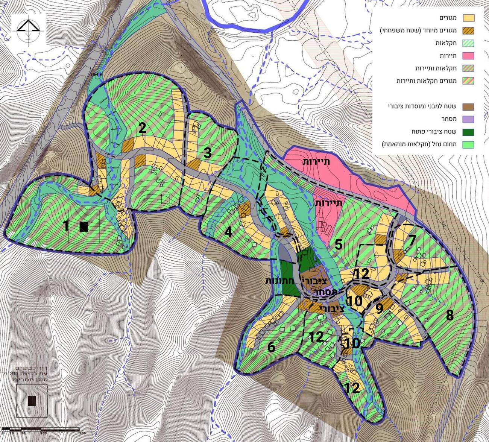
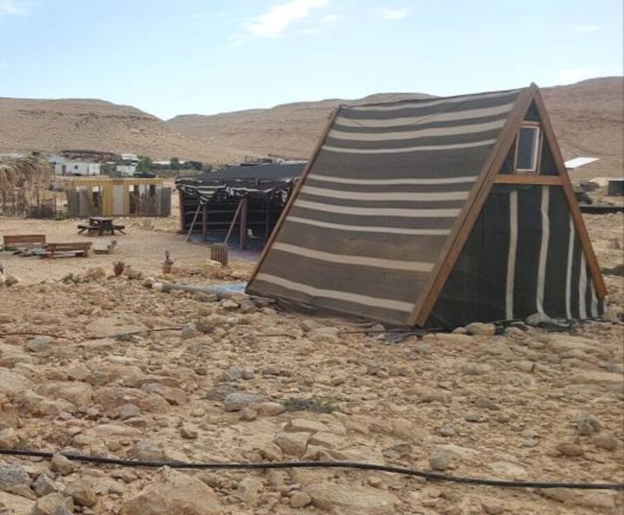
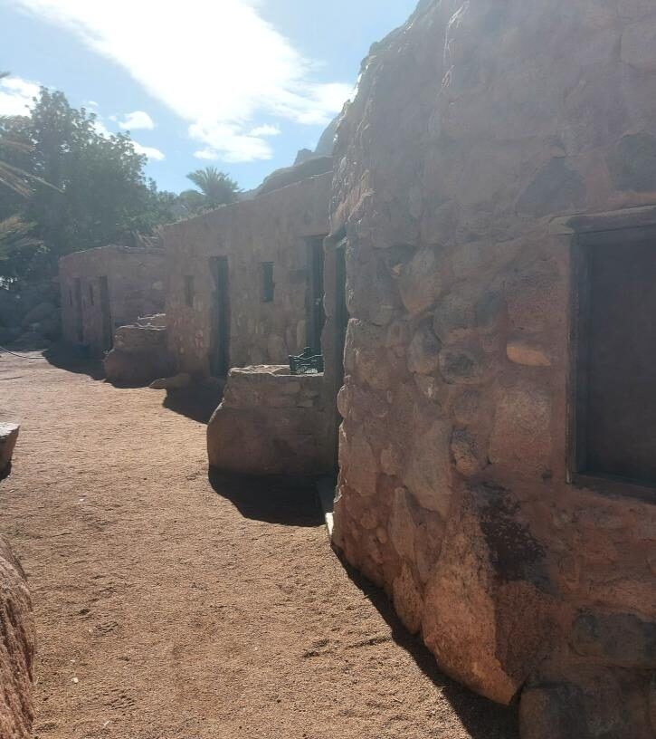
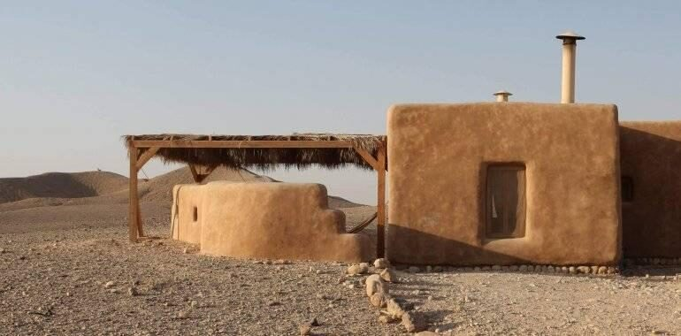
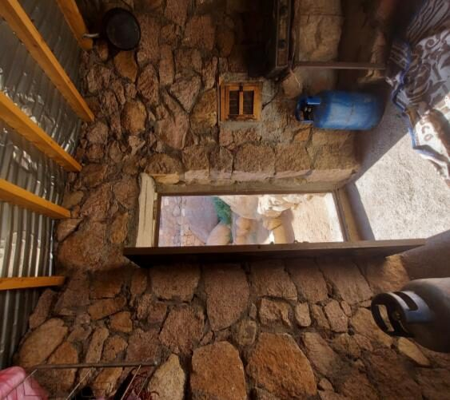
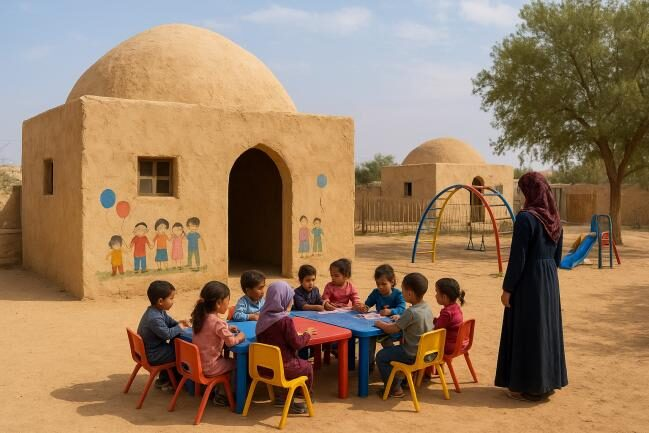

פער גדול בהקצאת קרקעות להתיישבות כפרית בצפון הנגב

שטח המועצות האזוריות בצפון הנגב
כ־217 אלף כפריים בצפון הנגב
הקצב להסדרה מלאה: כ־900 שנה (לא כולל ריבוי טבעי)

משפחות בכפרים
משפחות בשנה עברו למגרש מוסדר
ובינתיים: המדינה הורסת
בתי מגורים בשנה
המדיניות הנוכחית היא אשליה מסוכנת: במקום לפתור את הבעיה, היא יוצרת בעיות חדשות
* נתוני רשות הבדואים ל־2017–2022
כ־50% עוני בעיירות, כ־70% בכפרים


אלפוח'ארי: הכפר שקיבל שטח ושיגשג

בזכות צירוף נסיבות נדיר, תושבי הכפר הציורי אלפוח'ארי שמדרום ללהבים נהנו ב-40 השנים האחרונות מאפשרות לבנות בתים ומכלאות ללא איום בהריסות, ומ-2,000 דונם לחקלאות.
התוצאה: אין עוני ואבטלה, אין פשיעה ואלימות, אין נשירה מבתי הספר. ענף הצאן, שכמעט הוכחד בשאר הכפרים, משגשג עם כ-5,000 כבשים, ומהכפר יצאו קבלנים מצליחים, מנהלי מפעלים ומוסדות חינוך והרופא הראשי של קופת חולים כללית במחוז דרום.
זהו המודל ל"תוכנית המועצות האזוריות":האדמה היא מנוע צמיחה, לא שדה קרב.


הרחבת המועצות האזוריות הבדואיות לכ־600 אלף דונם

הקצאת 150 אלף דונם ל-30 אלף נחלות בכפרים

לכל משפחה: 2 דונם למגורים ו־3 דונם לפרנסה, לא בהכרח בצמוד.
- בנייה מדורגת לגובה תאפשר מגורים להורים, לילדיהם ולחלק מהנכדים.
- משק העזר יאפשר להקים עסקים מכל הסוגים, להשכיר שטח או לגדל מזון לצריכה עצמית.
אנו מעריכים כי הקצאת משקי העזר תביא להקמת אלפי עסקים קטנים בתוך שנים ספורות, לצמצום משמעותי בעוני, באבטלה ובפשיעה ולתוצאות חיוביות רבות אחרות.
כלכלה, לא צדקה
20–30 מיליארד ₪ בשנה: תוספת התוצר המוערכת בנגב ביישום מלא של "תוכנית המועצות האזוריות"
בנייר עמדה שהגישה המועצה למפלגות ולמקבלי ההחלטות, היא קוראת למדינה לבצע מחקר כלכלי מעמיק בכל הסעיפים לקבלת אמדן מבוסס.
חיסכון של מאות מיליונים בשנה למדינה ולתושבים, פחות סטרס ויותר פריון כלכלי
מסגרות לאלפי ילדי גנים שיושבים בבית. כל שקל שמושקע מחזיר 7–10 שקלים
מוסדות חינוך בתוך הכפרים, רשויות חזקות המסוגלות להשקיע בהם
שדות סולאריים, אזורי תעשייה ותעסוקה, דרכי מסחר, תיירות, חקלאות ועוד
השכלה משופרת, עסקים מקומיים ותשתיות תחבורה: עשרות אלפי משלמי מסים חדשים
שביעות רצון מהמדיניות, צמצום נזקים כלכליים מפשיעת רכוש וצמצום האלימות
נחל חווה: התושבים כבר שרטטו את הכפר
הכפר נחל חווה (אל־אפדאי) יושב לצד כביש 40, בין מצפה רמון לשדה בוקר. גרות בו 12 משפחות מורחבות משבט סראחין, שבהן כ־200 תושבים. במשך חצי שנה ישבו אדריכלים מעמותת קשת עם נציגים מכל משפחה, בשיג, מעל תצלום אוויר. הנציגים סימנו את הנחלות ואמרו מה חסר: גן ילדים, ביוב, דרך סלולה, צימרים. כולם ביקשו לשמור על הכפר מסורתי, שקט וקרוב למדבר.
תוכנית עמותת קשת לפיתוח נחל חווה


"מבדיקה של תכניות המתאר הארציות והמחוזיות עולה, שאין מגבלה סטטוטורית־תכנונית בשטח הכפר"
התוכנית קיימת, חסרה רק החלטת ממשלה. "תוכנית המועצות" מבקשת לקבל אותה תוך 60 יום
בתים שצמחו מהנוף
הכפר כבר מתפרנס מהאדמה
צאן, גמלים, זיתים, אירוח. התוכנית לא ממציאה כלכלה חדשה. היא נותנת לכלכלה הקיימת כתובת חוקית ומקום לגדול. גם מינהל התכנון מציע מתחמי אירוח בשיגים ובאוהלים, ומקדם באזור את "דרך האוהלים".



איך זה ייראה
ב־2022 יצאו נציגים מקהילות הר הנגב לסיור השראה בכפרים הבדואיים בסיני, וחזרו עם דוגמאות לבתי אבן, לבני אדמה וטיח בוץ. במקום פח, בתים שנראים כאילו צמחו מהנוף, מחומרים וגוונים של המדבר.




ומה עם תביעות הבעלות?
התוכנית לא מכריעה בהן. כל התושבים זכאים למשק, עם תביעה ובלי תביעה, ואף צד לא מוותר על עמדתו המשפטית.
לוקחים אדמה מיישובים יהודיים?
לא. רוב השטח לא שייך לאף רשות. רק בשוליים יעברו שטחים קטנים מערד, מירוחם ומתמר, במקומות שבהם כבר יושבים כפרים.
זה לא יהפוך להפקרות?
להפך. כשלכל משפחה יש מקום חוקי לבנות, ברור מה מותר ומה אסור, והאכיפה נעשית קלה וזולה.
לוח הזמנים לממשלה הבאה
- היום הראשון
עוצרים את ההריסות
- עד 14 יום
אימוץ עקרונות התוכנית, הוראה לשר הפנים להכין את הרחבת המועצות, יציאה למחקר הכלכלי
- 30 יום
צוות יישום בין־משרדי מתחיל לכתוב את תוכנית "החיים עכשיו" - כללים המאפשרים בנייה בתקופת הביניים עד סיום ההסדרה
- 60 יום
השקת תוכניות חלוץ בכפרים שלהם תוכניות מוכנות, דוגמת נחל חווה, תל ערד, אל בקיעה, נחל אריכא וכרכור
- 90 יום
"החיים עכשיו" מאושרת ויוצאת לדרך. שירותים ותשתיות זמינים לפני סיום הפיתוח
- 120 יום
החלטה על גבולות המועצות ועל הקצאת הקרקע למגורים ולמשקי העזר
- 24 חודשים
רשות הבדואים נסגרת במתכונתה הנוכחית. סמכויות התכנון המקומי עוברות למועצות
- 30 חודשים
תוכניות לכל הכפרים מוגשות להפקדה
שישה עשורים ניסתה המדינה להזיז את הכפרים, ולא הצליחה.
מה שהמדינה נתנה למושבים, היא יכולה לתת לאזרחיה הבדואים. זה לא רק צודק. זה גם משתלם.